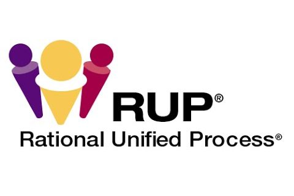

Rational Unified Process (RUP)

Rational Unified Process (RUP), o Proceso Unificado de Rational, es un enfoque metodológico para el desarrollo de software que proporciona una estructura y guía para gestionar todo el ciclo de vida del desarrollo de software. RUP busca producir software de alta calidad de manera predecible y controlada.
RUP se organiza en cinco etapas principales, que ayudan a planificar, diseñar, implementar y validar el software de manera iterativa y progresiva.
1. Inicio (Inception)
La fase de Inicio se centra en definir el alcance del proyecto y sus objetivos principales. En esta etapa se realizan actividades como:
- Identificación de los requisitos más importantes.
- Definición de los actores principales y casos de uso.
- Evaluación de riesgos iniciales.
- Estimación de recursos, costos y tiempos.
- Creación de un plan de proyecto preliminar.
El objetivo principal de esta fase es asegurar que el proyecto es viable y que los stakeholders están alineados.
2. Elaboración (Elaboration / Análisis)
Durante la fase de Elaboración, se profundiza en los requisitos y se define la arquitectura del sistema.
Actividades clave:
- Refinamiento de requisitos y casos de uso.
- Análisis de riesgos detallado.
- Diseño de la arquitectura básica del software.
- Preparación de un plan de desarrollo detallado.
- Validación temprana de la viabilidad técnica.
Esta fase busca establecer una base sólida para el desarrollo y minimizar riesgos futuros.
3. Construcción (Construction / Diseño e Implementación)
La fase de Construcción está dedicada a desarrollar y construir el sistema siguiendo la arquitectura definida.
Actividades principales:
- Diseño detallado de componentes y módulos.
- Implementación del código fuente.
- Integración de componentes.
- Pruebas unitarias y de integración.
- Gestión continua de la configuración.
El objetivo es producir un sistema completo y funcional listo para pruebas más exhaustivas.
4. Pruebas (Transition / Verificación y Validación)
La fase de Pruebas o Transición se centra en validar que el sistema cumple con los requisitos y está listo para su despliegue.
Actividades:
- Pruebas de aceptación por el usuario.
- Corrección de defectos encontrados durante la prueba.
- Ajustes de rendimiento y optimización.
- Preparación de la documentación final del usuario.
- Capacitación a usuarios finales si es necesario.
Se busca garantizar la calidad y satisfacción del cliente antes del lanzamiento.
5. Mantenimiento (Maintenance)
Aunque RUP formalmente tiene cuatro fases principales, el mantenimiento es un proceso continuo posterior al despliegue:
- Corrección de errores encontrados en producción.
- Mejoras y actualizaciones del sistema.
- Adaptación a nuevos requisitos o cambios tecnológicos.
- Gestión de la configuración y versiones futuras.
El objetivo es mantener el sistema operativo y evolucionar con las necesidades del negocio.
Características clave de RUP
- Iterativo e incremental: El desarrollo se realiza en ciclos, permitiendo ajustes tempranos.
- Orientado a casos de uso: Los requisitos se documentan como casos de uso que guían el desarrollo.
- Gestión de riesgos: Identificación y mitigación de riesgos desde el inicio.
- Documentación controlada: RUP define artefactos y plantillas para estandarizar el proceso.